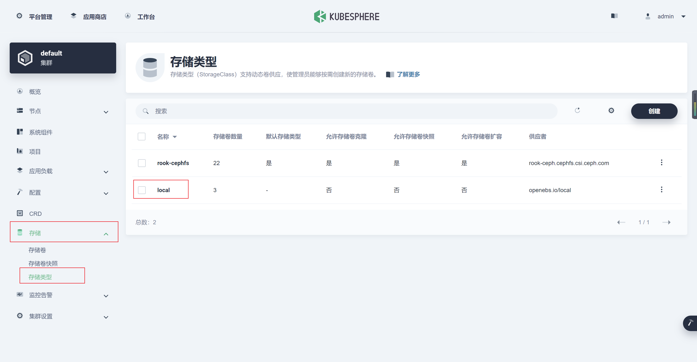
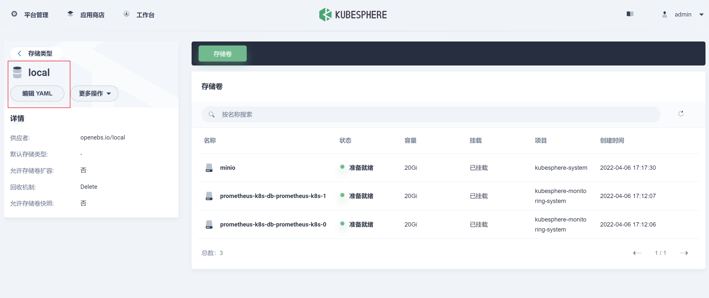
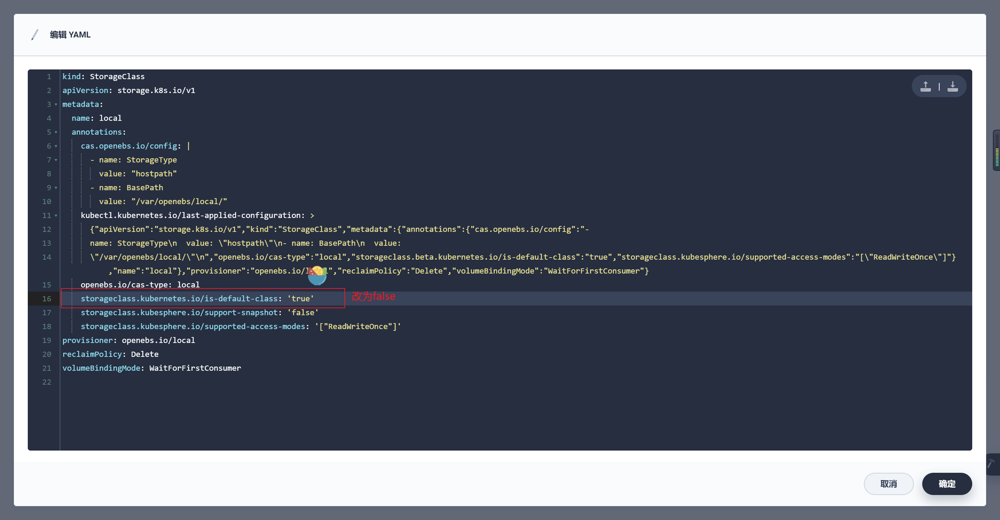

基于K8S的Rook-Ceph搭建（TODO）
Rook: CNCF Open-Source, Cloud-Native Storage for Kubernetes.
1. 先决条件
1.1 K8S集群
| 主机 | IP | 角色 | version | 磁盘(裸盘,建议最少三块,构建三副本) |
|---|---|---|---|---|
| node131 | 172.16.2.131 | control-plane,master | v1.20.10 | / |
| node132 | 172.16.2.132 | woker | v1.20.10 | sda |
| node133 | 172.16.2.133 | woker | v1.20.10 | sda |
| node134 | 172.16.2.134 | woker | v1.20.10 | sda |
1.2 Rook v1.8.1对应ceph版本号
[rook@rook-ceph-tools-74bb778c5-qf8f8 /]$ ceph versions
{
"mon": {
"ceph version 16.2.7 (dd0603118f56ab514f133c8d2e3adfc983942503) pacific (stable)": 3
},
"mgr": {
"ceph version 16.2.7 (dd0603118f56ab514f133c8d2e3adfc983942503) pacific (stable)": 1
},
"osd": {
"ceph version 16.2.7 (dd0603118f56ab514f133c8d2e3adfc983942503) pacific (stable)": 1
},
"mds": {
"ceph version 16.2.7 (dd0603118f56ab514f133c8d2e3adfc983942503) pacific (stable)": 2
},
"overall": {
"ceph version 16.2.7 (dd0603118f56ab514f133c8d2e3adfc983942503) pacific (stable)": 7
}
}
2. 安装
2.1 拉取项目,并进入ceph配置目录
2.2 配置operator.yaml的镜像源
- 由于国内环境无法Pull官方镜像，所以要修改默认镜像地址，改为阿里云镜像仓库
registry.aliyuncs.com/it00021hot是网友的镜像地址，利用github action每天定时同步官方镜像，所有版本的镜像都有
ROOK_CSI_CEPH_IMAGE: "registry.aliyuncs.com/it00021hot/cephcsi:v3.4.0"
ROOK_CSI_REGISTRAR_IMAGE: "registry.aliyuncs.com/it00021hot/csi-node-driver-registrar:v2.3.0"
ROOK_CSI_RESIZER_IMAGE: "registry.aliyuncs.com/it00021hot/csi-resizer:v1.3.0"
ROOK_CSI_PROVISIONER_IMAGE: "registry.aliyuncs.com/it00021hot/csi-provisioner:v3.0.0"
ROOK_CSI_SNAPSHOTTER_IMAGE: "registry.aliyuncs.com/it00021hot/csi-snapshotter:v4.2.0"
ROOK_CSI_ATTACHER_IMAGE: "registry.aliyuncs.com/it00021hot/csi-attacher:v3.3.0"
2.3 部署operator
2.4 给OSD节点打标签
设置存储节点，即ceph只部署在对应的打标签的节点上
kubectl label nodes node132 ceph-osd=enabled
kubectl label nodes node133 ceph-osd=enabled
kubectl label nodes node134 ceph-osd=enabled
kubectl get node --show-labels
2.5 配置cluser
vim cluster.yaml- 开启
provider: host； - 修改 dashboard 的 ssl为false；
-
使用特定的节点和磁盘：
- 配置
placement，选择打ceph-osd=enabled的节点； - 将storage的useAllNodes属性改为false
- 在storage的nodes下增加需要使用osd的节点及对应硬盘
- 将storage下的config的
osdsPerDevice注释打开并设为1 - 要在每个设备上创建的 OSD 数。NVMe等高性能设备可以处理运行多个OSD。如果需要，可以为每个节点和每个设备覆盖此内容。本次环境为机械硬盘，故采用参数设置为1
- 配置
#################################################################################################################
# Define the settings for the rook-ceph cluster with common settings for a production cluster.
# All nodes with available raw devices will be used for the Ceph cluster. At least three nodes are required
# in this example. See the documentation for more details on storage settings available.
# For example, to create the cluster:
# kubectl create -f crds.yaml -f common.yaml -f operator.yaml
# kubectl create -f cluster.yaml
#################################################################################################################
apiVersion: ceph.rook.io/v1
kind: CephCluster
metadata:
name: rook-ceph
namespace: rook-ceph # namespace:cluster
spec:
cephVersion:
# The container image used to launch the Ceph daemon pods (mon, mgr, osd, mds, rgw).
# v15 is octopus, and v16 is pacific.
# RECOMMENDATION: In production, use a specific version tag instead of the general v14 flag, which pulls the latest release and could result in different
# versions running within the cluster. See tags available at https://hub.docker.com/r/ceph/ceph/tags/.
# If you want to be more precise, you can always use a timestamp tag such quay.io/ceph/ceph:v16.2.7-20211208
# This tag might not contain a new Ceph version, just security fixes from the underlying operating system, which will reduce vulnerabilities
image: quay.io/ceph/ceph:v16.2.7
# Whether to allow unsupported versions of Ceph. Currently `octopus` and `pacific` are supported.
# Future versions such as `pacific` would require this to be set to `true`.
# Do not set to true in production.
allowUnsupported: false
# The path on the host where configuration files will be persisted. Must be specified.
# Important: if you reinstall the cluster, make sure you delete this directory from each host or else the mons will fail to start on the new cluster.
# In Minikube, the '/data' directory is configured to persist across reboots. Use "/data/rook" in Minikube environment.
dataDirHostPath: /var/lib/rook
# Whether or not upgrade should continue even if a check fails
# This means Ceph's status could be degraded and we don't recommend upgrading but you might decide otherwise
# Use at your OWN risk
# To understand Rook's upgrade process of Ceph, read https://rook.io/docs/rook/latest/ceph-upgrade.html#ceph-version-upgrades
skipUpgradeChecks: false
# Whether or not continue if PGs are not clean during an upgrade
continueUpgradeAfterChecksEvenIfNotHealthy: false
# WaitTimeoutForHealthyOSDInMinutes defines the time (in minutes) the operator would wait before an OSD can be stopped for upgrade or restart.
# If the timeout exceeds and OSD is not ok to stop, then the operator would skip upgrade for the current OSD and proceed with the next one
# if `continueUpgradeAfterChecksEvenIfNotHealthy` is `false`. If `continueUpgradeAfterChecksEvenIfNotHealthy` is `true`, then opertor would
# continue with the upgrade of an OSD even if its not ok to stop after the timeout. This timeout won't be applied if `skipUpgradeChecks` is `true`.
# The default wait timeout is 10 minutes.
waitTimeoutForHealthyOSDInMinutes: 10
mon:
# Set the number of mons to be started. Generally recommended to be 3.
# For highest availability, an odd number of mons should be specified.
count: 3
# The mons should be on unique nodes. For production, at least 3 nodes are recommended for this reason.
# Mons should only be allowed on the same node for test environments where data loss is acceptable.
allowMultiplePerNode: false
mgr:
# When higher availability of the mgr is needed, increase the count to 2.
# In that case, one mgr will be active and one in standby. When Ceph updates which
# mgr is active, Rook will update the mgr services to match the active mgr.
count: 1
modules:
# Several modules should not need to be included in this list. The "dashboard" and "monitoring" modules
# are already enabled by other settings in the cluster CR.
- name: pg_autoscaler
enabled: true
# enable the ceph dashboard for viewing cluster status
dashboard:
enabled: true
# serve the dashboard under a subpath (useful when you are accessing the dashboard via a reverse proxy)
# urlPrefix: /ceph-dashboard
# serve the dashboard at the given port.
# port: 8443
# serve the dashboard using SSL
ssl: false
# enable prometheus alerting for cluster
monitoring:
# requires Prometheus to be pre-installed
enabled: false
# namespace to deploy prometheusRule in. If empty, namespace of the cluster will be used.
# Recommended:
# If you have a single rook-ceph cluster, set the rulesNamespace to the same namespace as the cluster or keep it empty.
# If you have multiple rook-ceph clusters in the same k8s cluster, choose the same namespace (ideally, namespace with prometheus
# deployed) to set rulesNamespace for all the clusters. Otherwise, you will get duplicate alerts with multiple alert definitions.
rulesNamespace: rook-ceph
network:
# enable host networking
provider: host
# enable the Multus network provider
#provider: multus
#selectors:
# The selector keys are required to be `public` and `cluster`.
# Based on the configuration, the operator will do the following:
# 1. if only the `public` selector key is specified both public_network and cluster_network Ceph settings will listen on that interface
# 2. if both `public` and `cluster` selector keys are specified the first one will point to 'public_network' flag and the second one to 'cluster_network'
#
# In order to work, each selector value must match a NetworkAttachmentDefinition object in Multus
#
#public: public-conf --> NetworkAttachmentDefinition object name in Multus
#cluster: cluster-conf --> NetworkAttachmentDefinition object name in Multus
# Provide internet protocol version. IPv6, IPv4 or empty string are valid options. Empty string would mean IPv4
#ipFamily: "IPv6"
# Ceph daemons to listen on both IPv4 and Ipv6 networks
#dualStack: false
# enable the crash collector for ceph daemon crash collection
crashCollector:
disable: false
# Uncomment daysToRetain to prune ceph crash entries older than the
# specified number of days.
#daysToRetain: 30
# enable log collector, daemons will log on files and rotate
# logCollector:
# enabled: true
# periodicity: 24h # SUFFIX may be 'h' for hours or 'd' for days.
# automate [data cleanup process](https://github.com/rook/rook/blob/master/Documentation/ceph-teardown.md#delete-the-data-on-hosts) in cluster destruction.
cleanupPolicy:
# Since cluster cleanup is destructive to data, confirmation is required.
# To destroy all Rook data on hosts during uninstall, confirmation must be set to "yes-really-destroy-data".
# This value should only be set when the cluster is about to be deleted. After the confirmation is set,
# Rook will immediately stop configuring the cluster and only wait for the delete command.
# If the empty string is set, Rook will not destroy any data on hosts during uninstall.
confirmation: ""
# sanitizeDisks represents settings for sanitizing OSD disks on cluster deletion
sanitizeDisks:
# method indicates if the entire disk should be sanitized or simply ceph's metadata
# in both case, re-install is possible
# possible choices are 'complete' or 'quick' (default)
method: quick
# dataSource indicate where to get random bytes from to write on the disk
# possible choices are 'zero' (default) or 'random'
# using random sources will consume entropy from the system and will take much more time then the zero source
dataSource: zero
# iteration overwrite N times instead of the default (1)
# takes an integer value
iteration: 1
# allowUninstallWithVolumes defines how the uninstall should be performed
# If set to true, cephCluster deletion does not wait for the PVs to be deleted.
allowUninstallWithVolumes: false
# To control where various services will be scheduled by kubernetes, use the placement configuration sections below.
# The example under 'all' would have all services scheduled on kubernetes nodes labeled with 'role=storage-node' and
# tolerate taints with a key of 'storage-node'.
# placement:
# # osd:
# # nodeAffinity:
# # requiredDuringSchedulingIgnoredDuringExecution:
# # nodeSelectorTerms:
# # - matchExpressions:
# # - key: ceph-osd
# # operator: In
# # values:
# # - enabled
placement:
osd:
nodeAffinity:
requiredDuringSchedulingIgnoredDuringExecution:
nodeSelectorTerms:
- matchExpressions:
- key: ceph-osd
operator: In
values:
- enabled
# podAffinity:
# podAntiAffinity:
# topologySpreadConstraints:
# tolerations:
# - key: storage-node
# operator: Exists
# The above placement information can also be specified for mon, osd, and mgr components
# mon:
# Monitor deployments may contain an anti-affinity rule for avoiding monitor
# collocation on the same node. This is a required rule when host network is used
# or when AllowMultiplePerNode is false. Otherwise this anti-affinity rule is a
# preferred rule with weight: 50.
# osd:
# mgr:
# cleanup:
annotations:
# all:
# mon:
# osd:
# cleanup:
# prepareosd:
# If no mgr annotations are set, prometheus scrape annotations will be set by default.
# mgr:
labels:
# all:
# mon:
# osd:
# cleanup:
# mgr:
# prepareosd:
# monitoring is a list of key-value pairs. It is injected into all the monitoring resources created by operator.
# These labels can be passed as LabelSelector to Prometheus
# monitoring:
# crashcollector:
resources:
# The requests and limits set here, allow the mgr pod to use half of one CPU core and 1 gigabyte of memory
# mgr:
# limits:
# cpu: "500m"
# memory: "1024Mi"
# requests:
# cpu: "500m"
# memory: "1024Mi"
# The above example requests/limits can also be added to the other components
# mon:
# osd:
# For OSD it also is a possible to specify requests/limits based on device class
# osd-hdd:
# osd-ssd:
# osd-nvme:
# prepareosd:
# mgr-sidecar:
# crashcollector:
# logcollector:
# cleanup:
# The option to automatically remove OSDs that are out and are safe to destroy.
removeOSDsIfOutAndSafeToRemove: false
# priorityClassNames:
# all: rook-ceph-default-priority-class
# mon: rook-ceph-mon-priority-class
# osd: rook-ceph-osd-priority-class
# mgr: rook-ceph-mgr-priority-class
storage: # cluster level storage configuration and selection
useAllNodes: false
useAllDevices: false
nodes:
- name: "node132"
devices: # specific devices to use for storage can be specified for each node
- name: "sda" #k8s-node02鏂板姞鐨勮８鐩? #deviceFilter:
- name: "node133"
devices:
- name: "sda"
- name: "node134"
devices:
- name: "sda"
config:
# crushRoot: "custom-root" # specify a non-default root label for the CRUSH map
# metadataDevice: "md0" # specify a non-rotational storage so ceph-volume will use it as block db device of bluestore.
# databaseSizeMB: "1024" # uncomment if the disks are smaller than 100 GB
# journalSizeMB: "1024" # uncomment if the disks are 20 GB or smaller
osdsPerDevice: "1" # this value can be overridden at the node or device level
# encryptedDevice: "true" # the default value for this option is "false"
# Individual nodes and their config can be specified as well, but 'useAllNodes' above must be set to false. Then, only the named
# nodes below will be used as storage resources. Each node's 'name' field should match their 'kubernetes.io/hostname' label.
# nodes:
# - name: "172.17.4.201"
# devices: # specific devices to use for storage can be specified for each node
# - name: "sdb"
# - name: "nvme01" # multiple osds can be created on high performance devices
# config:
# osdsPerDevice: "5"
# - name: "/dev/disk/by-id/ata-ST4000DM004-XXXX" # devices can be specified using full udev paths
# config: # configuration can be specified at the node level which overrides the cluster level config
# - name: "172.17.4.301"
# deviceFilter: "^sd."
# when onlyApplyOSDPlacement is false, will merge both placement.All() and placement.osd
onlyApplyOSDPlacement: false
# The section for configuring management of daemon disruptions during upgrade or fencing.
disruptionManagement:
# If true, the operator will create and manage PodDisruptionBudgets for OSD, Mon, RGW, and MDS daemons. OSD PDBs are managed dynamically
# via the strategy outlined in the [design](https://github.com/rook/rook/blob/master/design/ceph/ceph-managed-disruptionbudgets.md). The operator will
# block eviction of OSDs by default and unblock them safely when drains are detected.
managePodBudgets: true
# A duration in minutes that determines how long an entire failureDomain like `region/zone/host` will be held in `noout` (in addition to the
# default DOWN/OUT interval) when it is draining. This is only relevant when `managePodBudgets` is `true`. The default value is `30` minutes.
osdMaintenanceTimeout: 30
# A duration in minutes that the operator will wait for the placement groups to become healthy (active+clean) after a drain was completed and OSDs came back up.
# Operator will continue with the next drain if the timeout exceeds. It only works if `managePodBudgets` is `true`.
# No values or 0 means that the operator will wait until the placement groups are healthy before unblocking the next drain.
pgHealthCheckTimeout: 0
# If true, the operator will create and manage MachineDisruptionBudgets to ensure OSDs are only fenced when the cluster is healthy.
# Only available on OpenShift.
manageMachineDisruptionBudgets: false
# Namespace in which to watch for the MachineDisruptionBudgets.
machineDisruptionBudgetNamespace: openshift-machine-api
# healthChecks
# Valid values for daemons are 'mon', 'osd', 'status'
healthCheck:
daemonHealth:
mon:
disabled: false
interval: 45s
osd:
disabled: false
interval: 60s
status:
disabled: false
interval: 60s
# Change pod liveness probe, it works for all mon,mgr,osd daemons
livenessProbe:
mon:
disabled: false
mgr:
disabled: false
osd:
disabled: false
2.6 设置secret
rook-ceph安装时需要一个secret
2.7 创建cluster
2.8 删除secret（Rook-ceph 1.8.1 BUG）
当前版本ceph bug，需先设置secret完成cluster创建后再删除保证后续操作成功
2.9 安装工具箱Toolbox
- Rook工具箱是一个容器，其中包含用于rook调试和测试的常用工具。 该工具箱基于CentOS，因此yum可以轻松安装您选择的更多工具。
2.10 测试Rook
- 一旦 toolbox 的 Pod 运行成功后，我们就可以使用下面的命令进入到工具箱内部进行操作：
kubectl -n rook-ceph exec -it $(kubectl -n rook-ceph get pod -l "app=rook-ceph-tools" -o jsonpath='{.items[0].metadata.name}') /bin/bash
查看集群的状态：
# 需要满足下面的条件才认为是健康的
# 所有 mons 应该达到法定数量
# mgr 应该是激活状态
# 至少有一个 OSD 处于激活状态
# 如果不是 HEALTH_OK 状态，则应该查看告警或者错误信息
$ ceph status
cluster:
id: feeaeb98-5cce-4a4c-9300-3c784c48f6e4
health: HEALTH_OK
services:
mon: 3 daemons, quorum a,b,c (age 9w)
mgr: a(active, since 9w)
mds: 1/1 daemons up, 1 hot standby
osd: 3 osds: 3 up (since 9w), 3 in (since 9w)
data:
volumes: 1/1 healthy
pools: 3 pools, 65 pgs
objects: 26.32k objects, 41 GiB
usage: 127 GiB used, 11 TiB / 11 TiB avail
pgs: 65 active+clean
io:
client: 9.2 KiB/s rd, 14 KiB/s wr, 2 op/s rd, 3 op/s wr
- osd状态查看
2.11 集群安装状态监控
- 直到MESSAGE显示Cluster created successfully即表示安装成功,但不保证所有组件均成功
- 如监控时发现长时间卡在某一步,可通过describe查看相应bug
2.12 配置ceph-dashboard
kubectl apply -f dashboard-external-http.yaml
# 查看端口号
kubectl get svc -n rook-ceph
# 获取密码: 用户名: admin
kubectl -n rook-ceph get secret rook-ceph-dashboard-password -o jsonpath="{['data']['password']}" | base64 --decode && echo
2.13 ceph运维：格式化osd硬盘重新挂载
当osd出现无法修复的问题时，格式化osd硬盘重新挂载（当前集群OSD出现故障时操作，需备份相关数据）
2.13.1 删除osd
进入rook ceph toolbox
kubectl -n rook-ceph exec -it $(kubectl -n rook-ceph get pod -l "app=rook-ceph-tools" -o jsonpath='{.items[0].metadata.name}') bash
用ceph命令查询并删除osd
#查询状态，找到要移除的osd id
ceph osd status
#标记移除的osd
ceph osd out osd.1
ceph osd purge 1 --yes-i-really-mean-it
ceph osd crush remove osd.1
ceph auth rm osd.1
ceph osd rm osd.1
2.13.3 删除相关osd节点的deployment
2.13.4 登录要删除osd所在的服务器，格式化osd硬盘
#检查硬盘路径
fdisk -l
#删除硬盘分区信息
DISK="/dev/sda"
sgdisk --zap-all $DISK
#清理硬盘数据（hdd硬盘使用dd，ssd硬盘使用blkdiscard，二选一）
dd if=/dev/zero of="$DISK" bs=1M count=100 oflag=direct,dsync
blkdiscard $DISK
#删除原osd的lvm信息（如果单个节点有多个osd，那么就不能用*拼配模糊删除，而根据lsblk -f查询出明确的lv映射信息再具体删除，参照第5项操作）
ls /dev/mapper/ceph-* | xargs -I% -- dmsetup remove %
rm -rf /dev/ceph-*
#重启，sgdisk –zzap-all需要重启后才生效
reboot
2.13.5 手动查看并删除原osd创建的lvm信息（可选，根据第4步执行情况决定），否则格式化时会报 cannot open /dev/sdb: Device or resource busy 异常
- 报错错误：cannot open /dev/sdb: Device or resource busy
#查看lvm设备信息
dmsetup ls;
#删除ceph osd lvm映射关系
dmsetup remove ceph--5a4cb4bb--70b3--40bd--9da7--09d4f264a513-osd-xxxxxxxxx
#移动lv
lvremove /dev/mapper/ceph--5a4cb4bb--70b3--40bd--9da7--09d4f264a513-osd—xxxxxxxxx
#删除相关文件
rm –rf /dev/ceph--5a4cb4bb--70b3--40bd--9da7--09d4f264a513
2.13.6 重启ceph operator调度，使检测到格式化后的osd硬盘，osd启动后ceph集群会自动平衡数据
2.13.7 如果新osd pod无法执行起来可以通过查询osd prepare日志找问题
3. 踩坑注意
3.1 删除ceph集群卡住时, 先执行如下命令,再删除ceph集群
kubectl -n rook-ceph patch cephclusters.ceph.rook.io rook-ceph -p '{"metadata":{"finalizers": []}}' --type=merge
3.2 删除集群后,发现pod均处于Terminating状态,执行如下命令强制删除pod
3.3 删除cephfs的yaml时,发现卡住,执行如下命令修改myfs状态后,再次删除
- 进入edit模式后，删除finalizer那一行以及下一行
3.4 删除集群时,会遇到相关服务卡住,查看error日志,执行以下命令强制删除
kubectl -n rook-ceph patch CustomResourceDefinition cephblockpools.ceph.rook.io -p '{"metadata":{"finalizers": []}}' --type=merge
3.5 删除namespace状态为Terminating
1.导出配置
kubectl get ns rook-ceph -o json > tmp.json
2.删除tmp.json中spec及status部分的内容
3.启动代理
kubectl proxy
4.调用接口删除
curl -k -H "Content-Type: application/json" -X PUT --data-binary @tmp.json http://127.0.0.1:8001/api/v1/namespaces/rook-ceph/finalize
4. 使用
4.1 文件存储CephFS使用
4.1.1 创建cephfs及mds
- 配置: filesystem-test.yaml
#################################################################################################################
# Create a filesystem with settings for a test environment where only a single OSD is required.
# kubectl create -f filesystem-test.yaml
#################################################################################################################
apiVersion: ceph.rook.io/v1
kind: CephFilesystem
metadata:
name: myfs
namespace: rook-ceph # namespace:cluster
spec:
metadataPool:
replicated:
size: 1
requireSafeReplicaSize: false
dataPools:
- name: replicated
failureDomain: osd
replicated:
size: 1
requireSafeReplicaSize: false
preserveFilesystemOnDelete: false
metadataServer:
activeCount: 1
activeStandby: true
- 部署
4.1.2 创建动态存储storageclass
- 配置:
csi/cephfs/storageclass.yaml - 如需设置本storageclass为默认storageclass，则需将
storageclass.beta.kubernetes.io/is-default-class的值从"false"设置为"true"
apiVersion: storage.k8s.io/v1
kind: StorageClass
metadata:
name: rook-cephfs
annotations:
storageclass.beta.kubernetes.io/is-default-class: "false"
# Change "rook-ceph" provisioner prefix to match the operator namespace if needed
provisioner: rook-ceph.cephfs.csi.ceph.com # driver:namespace:operator
parameters:
# clusterID is the namespace where the rook cluster is running
# If you change this namespace, also change the namespace below where the secret namespaces are defined
clusterID: rook-ceph # namespace:cluster
# CephFS filesystem name into which the volume shall be created
fsName: myfs
# Ceph pool into which the volume shall be created
# Required for provisionVolume: "true"
pool: myfs-replicated
# The secrets contain Ceph admin credentials. These are generated automatically by the operator
# in the same namespace as the cluster.
csi.storage.k8s.io/provisioner-secret-name: rook-csi-cephfs-provisioner
csi.storage.k8s.io/provisioner-secret-namespace: rook-ceph # namespace:cluster
csi.storage.k8s.io/controller-expand-secret-name: rook-csi-cephfs-provisioner
csi.storage.k8s.io/controller-expand-secret-namespace: rook-ceph # namespace:cluster
csi.storage.k8s.io/node-stage-secret-name: rook-csi-cephfs-node
csi.storage.k8s.io/node-stage-secret-namespace: rook-ceph # namespace:cluster
# (optional) The driver can use either ceph-fuse (fuse) or ceph kernel client (kernel)
# If omitted, default volume mounter will be used - this is determined by probing for ceph-fuse
# or by setting the default mounter explicitly via --volumemounter command-line argument.
# mounter: kernel
reclaimPolicy: Delete
allowVolumeExpansion: true
mountOptions:
# uncomment the following line for debugging
#- debug
- 部署
4.1.3 测试
- 部署pvc(此步骤会自动生成pv):
kubectl -f pvc-test.yaml
apiVersion: v1
kind: PersistentVolumeClaim
metadata:
name: cephfs-pvc
namespace: ai-education
spec:
accessModes:
- ReadWriteMany
resources:
requests:
storage: 1Gi
storageClassName: rook-cephfs
- pod挂载pv: kubectl -f pod-test.yaml
apiVersion: v1
kind: Pod
metadata:
name: civilnet-demo-pod
namespace: ai-education
spec:
containers:
- name: gemfield-server
image: nginx
volumeMounts:
- name: mypvc
mountPath: /var/lib/www/html
volumes:
- name: mypvc
persistentVolumeClaim:
claimName: cephfs-pvc
readOnly: false
4.2 块存储RBD使用
4.3 将k8s默认存储设为cephfs
4.3.1 创建cephfs及mds（若4.1.1操作过，则此步骤略过）
- 配置: filesystem-test.yaml
- 部署: kubectl create -f filesystem-test.yaml
apiVersion: ceph.rook.io/v1
kind: CephFilesystem
metadata:
name: myfs
namespace: rook-ceph # namespace:cluster
spec:
metadataPool:
replicated:
size: 3
requireSafeReplicaSize: false
dataPools:
- name: replicated
failureDomain: osd
replicated:
size: 3
requireSafeReplicaSize: false
preserveFilesystemOnDelete: false
metadataServer:
activeCount: 1
activeStandby: true
4.3.2 创建动态存储storageclass并设置为k8s默认storageclass
- 配置:
storageclass.yaml - 部署:
kubectl create -f storageclass.yaml
注：如果使用KubeSphere，记得将kubesphere默认storageclass: "local"对应行去掉- storageclass.beta.kubernetes.io/is-default-class: "true"
apiVersion: storage.k8s.io/v1
kind: StorageClass
metadata:
name: rook-cephfs
annotations:
storageclass.beta.kubernetes.io/is-default-class: "true"
# Change "rook-ceph" provisioner prefix to match the operator namespace if needed
provisioner: rook-ceph.cephfs.csi.ceph.com # driver:namespace:operator
parameters:
# clusterID is the namespace where the rook cluster is running
# If you change this namespace, also change the namespace below where the secret namespaces are defined
clusterID: rook-ceph # namespace:cluster
# CephFS filesystem name into which the volume shall be created
fsName: myfs
# Ceph pool into which the volume shall be created
# Required for provisionVolume: "true"
pool: myfs-replicated
# The secrets contain Ceph admin credentials. These are generated automatically by the operator
# in the same namespace as the cluster.
csi.storage.k8s.io/provisioner-secret-name: rook-csi-cephfs-provisioner
csi.storage.k8s.io/provisioner-secret-namespace: rook-ceph # namespace:cluster
csi.storage.k8s.io/controller-expand-secret-name: rook-csi-cephfs-provisioner
csi.storage.k8s.io/controller-expand-secret-namespace: rook-ceph # namespace:cluster
csi.storage.k8s.io/node-stage-secret-name: rook-csi-cephfs-node
csi.storage.k8s.io/node-stage-secret-namespace: rook-ceph # namespace:cluster
# (optional) The driver can use either ceph-fuse (fuse) or ceph kernel client (kernel)
# If omitted, default volume mounter will be used - this is determined by probing for ceph-fuse
# or by setting the default mounter explicitly via --volumemounter command-line argument.
# mounter: kernel
reclaimPolicy: Retain
allowVolumeExpansion: true
mountOptions:
# uncomment the following line for debugging
#- debug
4.3.3 KubeSphere默认动态存储修改
- 若k8s集群采用kubesphere部署，则记得将kubesphere对应行改为- storageclass.beta.kubernetes.io/is-default-class: "false"



5. 卸载
5.1 卸载Ceph集群前,请先清除相关pod
- 删除块存储和文件存储
kubectl delete -n rook-ceph cephblockpool replicapool
kubectl delete storageclass rook-ceph-block
kubectl delete -f filesystem-test.yaml
kubectl delete storageclass csi-cephfs rook-ceph-block
kubectl -n rook-ceph delete cephcluster rook-ceph
5.2 主节点删除operator和相关crd
kubectl delete -f cluster.yaml
kubectl delete -f operator.yaml
kubectl delete -f common.yaml
kubectl delete -f crds.yaml
5.3 清除集群主机相关ceph数据
rm -rf /dev/ceph-*
rm -rf /run/ceph /etc/bash_completion.d/ceph /var/lib/ceph /var/log/ceph /usr/bin/ceph /usr/lib64/ceph /usr/share/ceph
rm -rf /var/lib/rook/* /var/lib/kubelet/plugins/ceph* /var/lib/kubelet/plugins_registry/ceph* /usr/share/doc/ceph
rm -rf /var/lib/kubelet/plugins/rook* /var/lib/kubelet/plugins_registry/rook*
rm -rf /var/lib/kubelet/plugins/csi* /var/lib/kubelet/plugins_registry/csi*
5.4 清除device
- dd if=/dev/zero of="$DISK" bs=1M count=100 oflag=direct,dsync
- if：输入文件名，缺省为标准输入
- of=file：输出文件名，缺省为标准输出
- bs：同时设置读入/输出的块大小为1M个字节
- count：仅拷贝100 个块，块大小等于bs指定的字节数
- oflag：指定写的方式FLAGS，FLAGS参数说明：
- append -append mode (makes sense only for output; conv=notrunc sug-gested)
- direct：读写数据采用直接IO方式；
- directory：读写失败除非是directory；
- dsync：读写数据采用同步IO；
- sync：同上，但是针对是元数据
- fullblock：堆积满block（accumulate full blocks of input ）(iflag only)；
- nonblock：读写数据采用非阻塞IO方式
- noatime：读写数据不更新访问时间
yum install gdisk -y
export DISK="/dev/sdc"
sgdisk --zap-all $DISK
dd if=/dev/zero of="$DISK" bs=1M count=100 oflag=direct,dsync
blkdiscard $DISK
ls /dev/mapper/ceph-* | xargs -I% -- dmsetup remove %
rm -rf /dev/ceph-*
- 此步骤完成后,使用命令: lsblk -f 查看磁盘是否回归到无系统裸盘状态，如无则需reboot相应主机